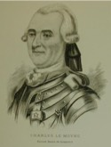

Beaubien-Perrault-Benington - Family Card
Beaubien-Perrault-Benington - Family Card
Charles Lemoyne De Longueuil 1er baron de Longueuil(10 Dec 1656 - 8 Jun 1729)Louis Joseph Le Gouès De Gray(abt 1660 - 9 Dec 1700)
Claude Elisabeth Souart D'adoucourt(1656 - 15 Sep 1724)Marguerite Legardeur(29 Jul 1657 - 26 Feb 1742)
m. 24 Apr 1720, Contrecoeur, Québec

b. 20 Oct 1687, Boucherville, Québec
d. 19 Jan 1755, Montréal, Québec
br.
occ. officier
edu.
rel.
Flags. Beaubien, Chevalier de St-Louis
b. 14 Nov 1697, Champlain, Québec
d. 12 Sep 1745, Montréal, Québec
br.
occ.
edu.
rel.
Flags. Beaubien
Children
M. Charlotte Lemoyne De Longueuil(27 Feb 1721 - 10 Apr 1721)
M. Charlotte Isabelle Lemoyne(14 Apr 1722 - 15 Nov 1761)
M. Anne Josephe Lemoyne De Longueuil(11 Jul 1723 - 12 Jul 1723)
Charles Jacques Lemoyne De Longueuil 3ème baron de Longueuil(26 Jul 1724 - 8 Sep 1755)
Joseph Lemoyne De Longueuil(30 Jun 1725 - 16 Aug 1725)
M. Louise Lemoyne De Longueuil(18 Jun 1726 - 6 Feb 1727)
M. Marguerite Catherine Lemoyne De Longueuil(13 Aug 1727 - 17 Aug 1727)
Pierre Amable Lemoyne De Longueuil(19 Sep 1728 - )
Joseph Thomas Lemoyne De Longueuil(21 Dec 1729 - 3 Mar 1733)
Anonyme Lemoyne De Longueuil(12 Apr 1731 - 12 Apr 1731)
Jean Andre Lemoyne De Longueuil(30 Nov 1733 - 11 Apr 1751)
Agathe Lemoyne(25 Nov 1734 - 28 Mar 1792)
> Catherine Lemoyne De Longueuil(25 Nov 1734 - 16 Apr 1788)
M. Antoinette Lemoyne De Longueuil(20 Jan 1736 - 8 Dec 1737)
M. Anne Angélique Lemoyne De Longueuil(20 Feb 1737 - 10 Jun 1737)
Francois Augustin Lemoyne De Longueuil(18 Feb 1738 - 19 Feb 1738)
Louis Etienne Lemoyne De Longueuil(21 Jan 1739 - )
Agnès Joseph Lemoyne(22 Jan 1739 - )